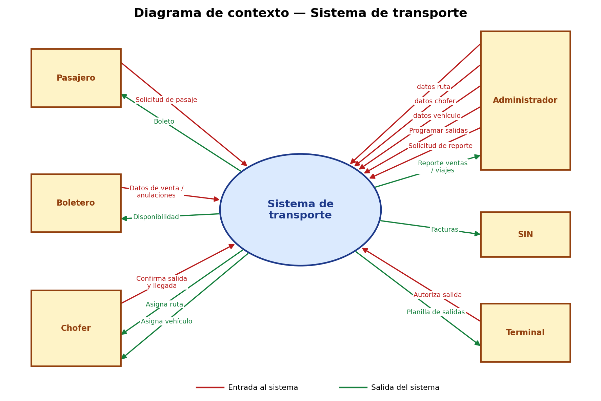
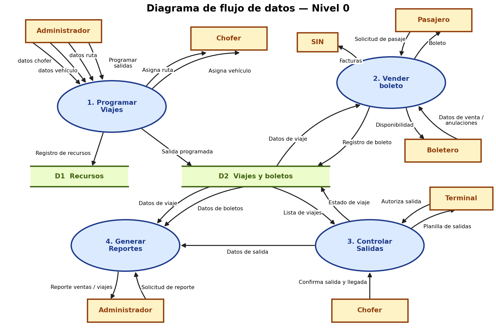
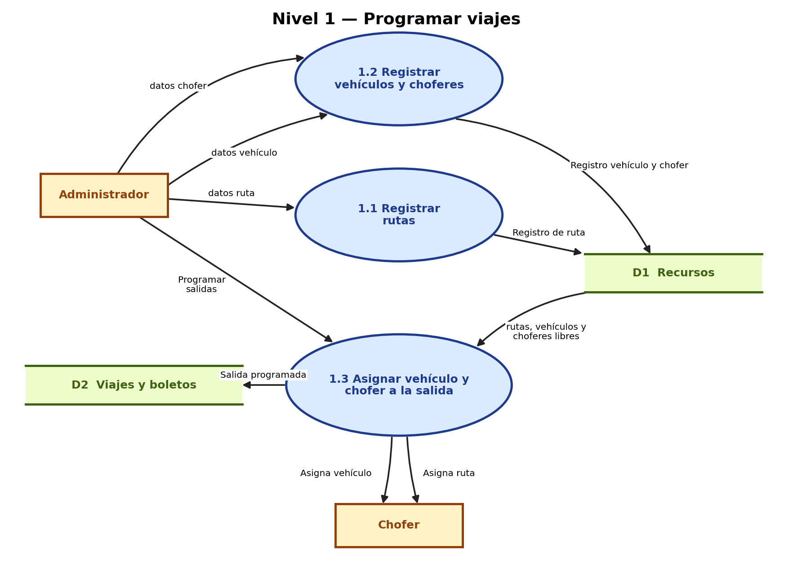
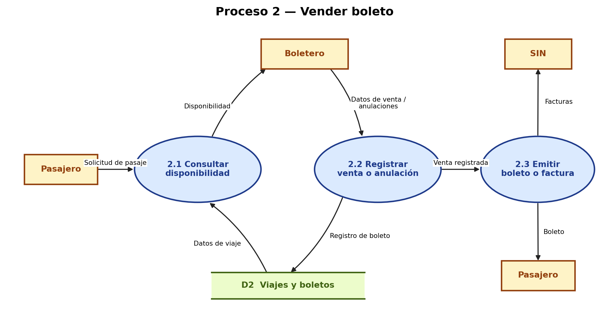
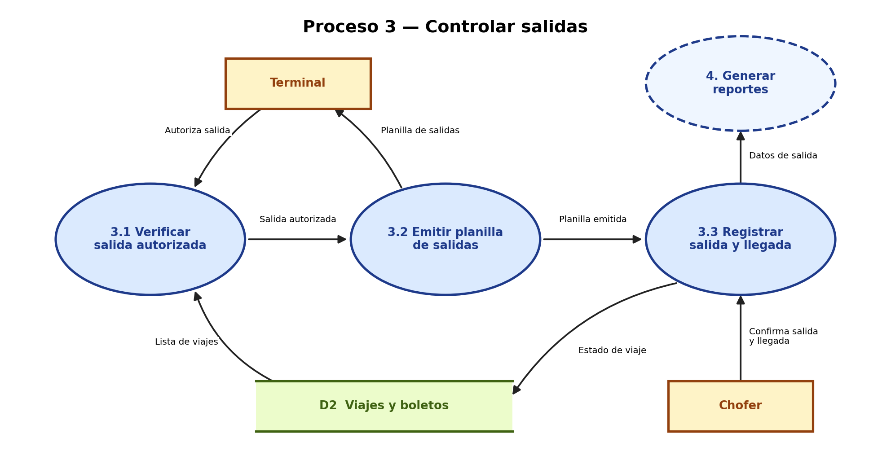
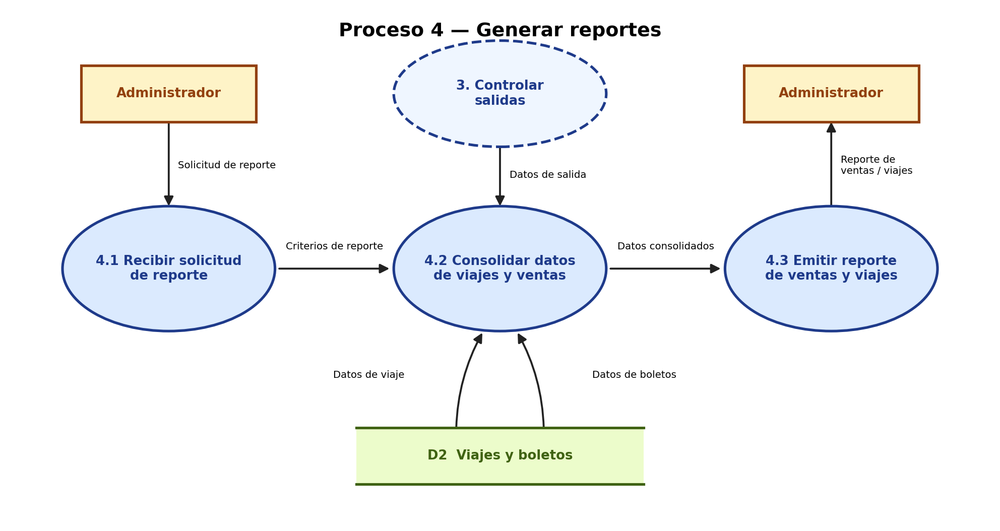

Análisis estructurado
Parte II: modelo ambiental y diagramas de flujo de datos.
1. Modelo ambiental
1.1 Declaración de propósito
El sistema controla rutas, vehículos, choferes y venta de boletos de la empresa, para que los viajes se programen y registren de forma ordenada y sin duplicados.
1.2 Lista de eventos
- El administrador registra o modifica la ruta.
- El administrador registra el vehículo y el chofer.
- El administrador asigna el vehículo y el chofer a un viaje.
- El pasajero consulta horarios y disponibilidad.
- El pasajero compra su boleto (reserva asiento).
- El pasajero anula o cambia un boleto.
- La terminal autoriza la salida de un viaje.
- El chofer confirma la salida y la llegada del viaje.
- El administrador solicita un reporte de ventas y de viajes.
- El pasajero solicita factura por su boleto.
1.3 Diagrama de contexto

2. DFD nivel 0
Dividimos el sistema en cuatro procesos: programar viajes, vender boleto, controlar salidas y generar reportes. Usan dos almacenes: D1 Recursos y D2 Viajes y boletos.

3. Explosión de procesos
3.1 Proceso 1: programar viajes

3.2 Proceso 2: vender boleto

3.3 Proceso 3: controlar salidas

3.4 Proceso 4: generar reportes
